感測與控制
GPIO、LED、按鍵、蜂鳴器、超音波與 DHT11，建立 ESP32 的基本功。
01_hello → 18_SONIC_OLEDLEARNING JOURNEY
這不是單一成品，而是一條從基礎硬體控制、感測、聯網到多端呈現的實作路徑。
GPIO、LED、按鍵、蜂鳴器、超音波與 DHT11，建立 ESP32 的基本功。
01_hello → 18_SONIC_OLED讀取空氣品質與氣象資料，串接 ThingSpeak、Google Sheets 與 LINE 通知。
19_PM25 → 25_dht_line以 MQTT 傳遞感測資料，搭配 TFT、網頁控制與電子紙完成整合展示。
26_mqtt → 38_mqtt_ctrl_page_epaperSYSTEM SNAPSHOT
ESP32 蒐集環境資料後，可透過 MQTT 發布到服務端，再由 OLED、TFT、電子紙或網頁控制介面呈現與互動。
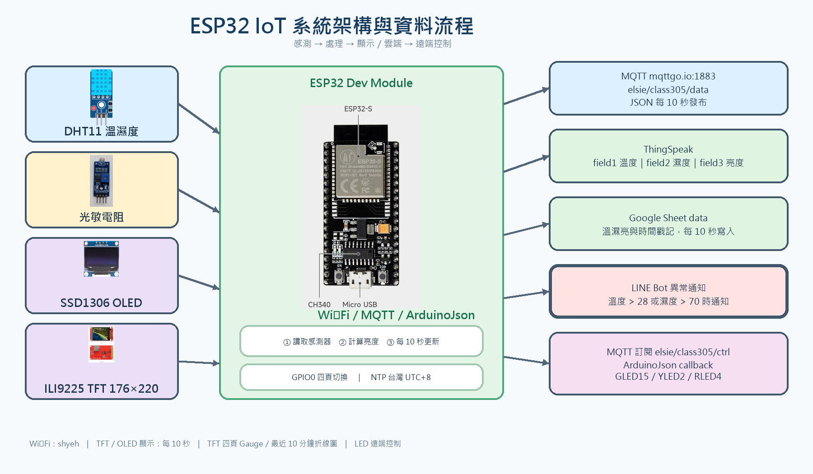
THE RESULTS
以下收錄本專案的硬體、顯示畫面與整合測試成果。
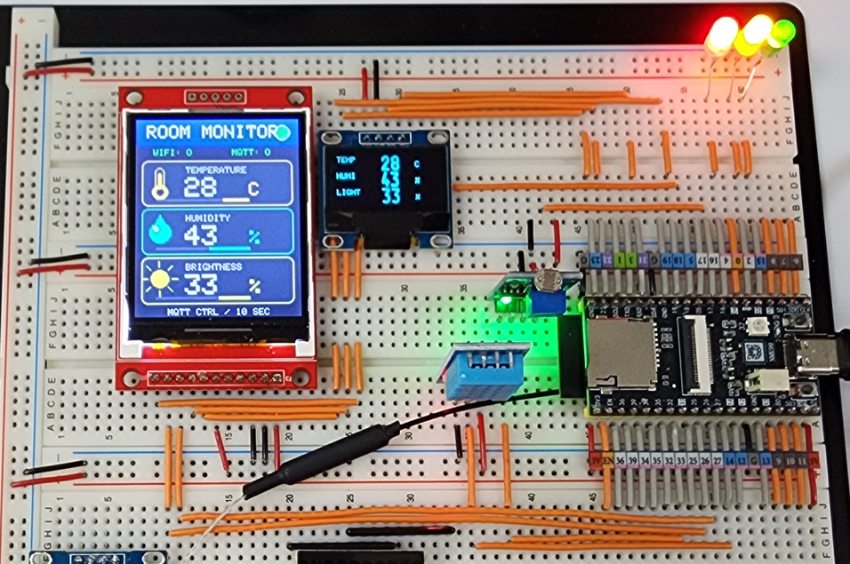
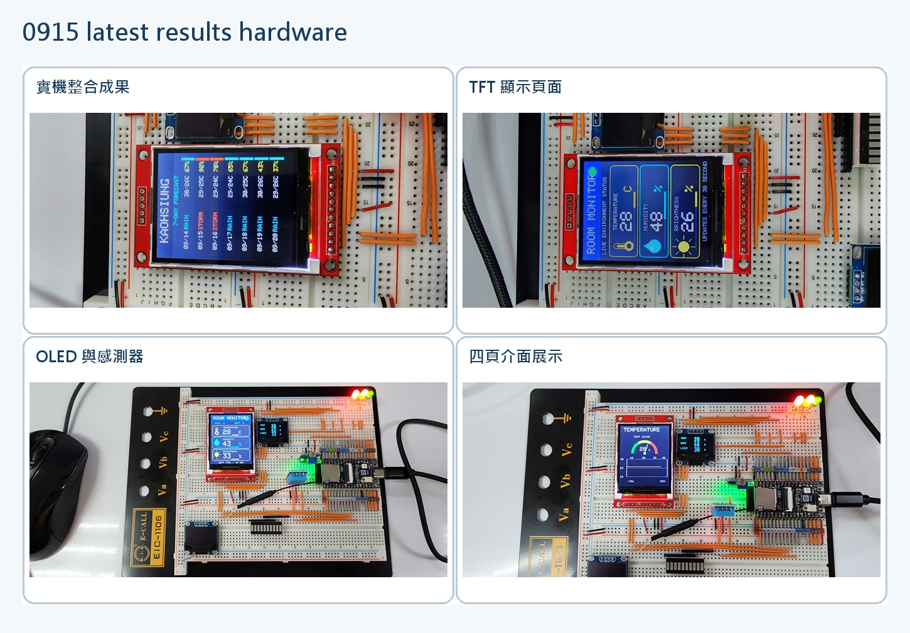
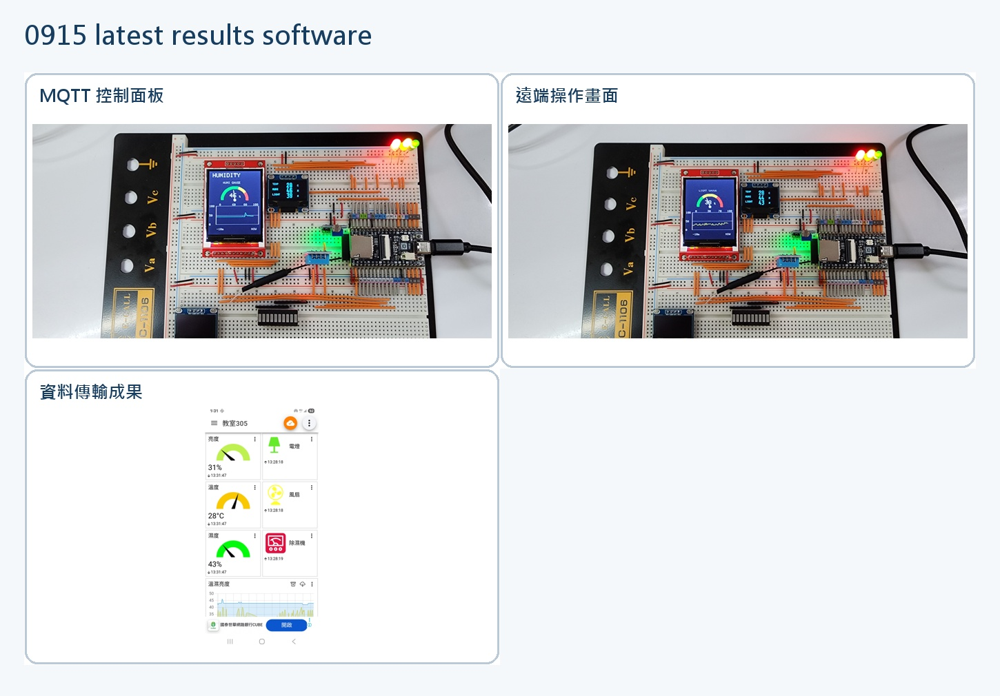
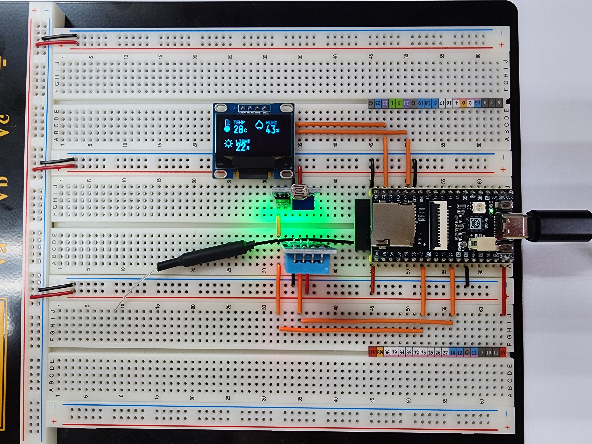
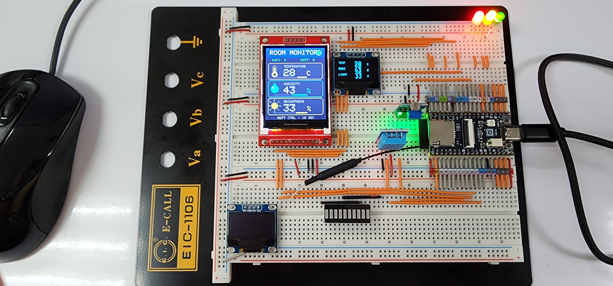
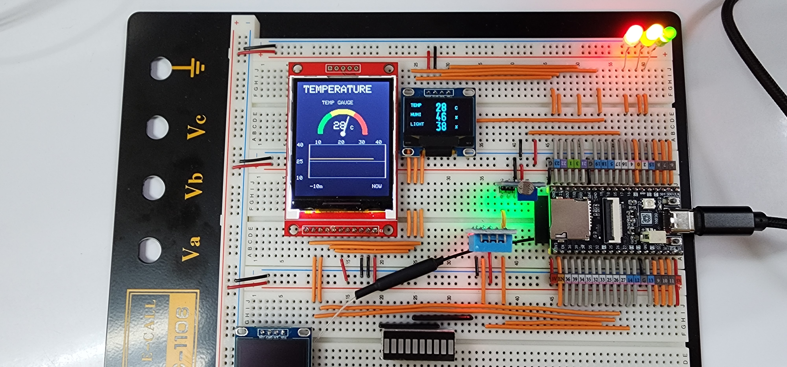
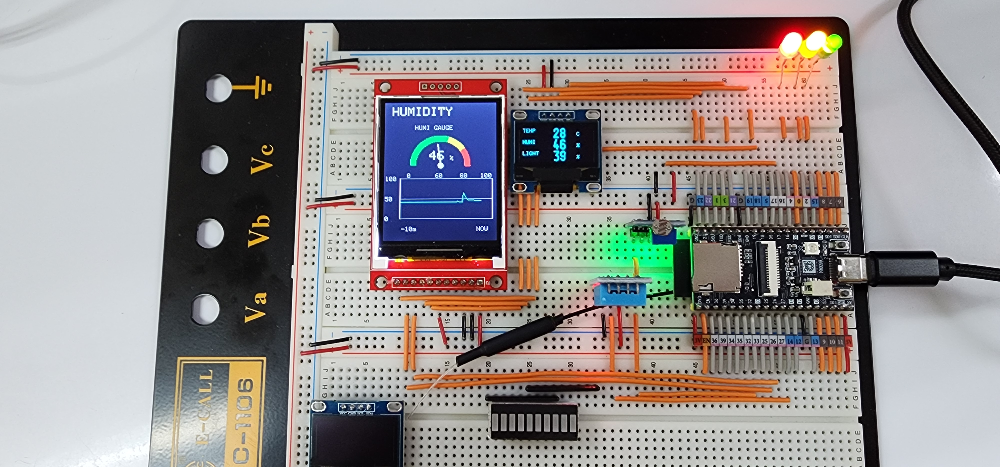
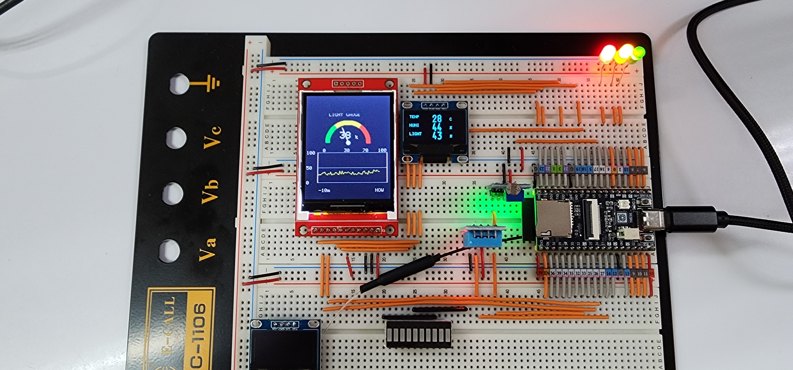
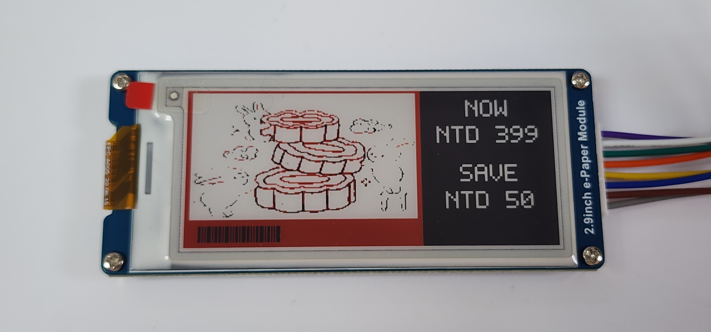
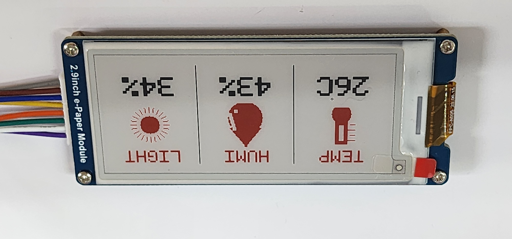
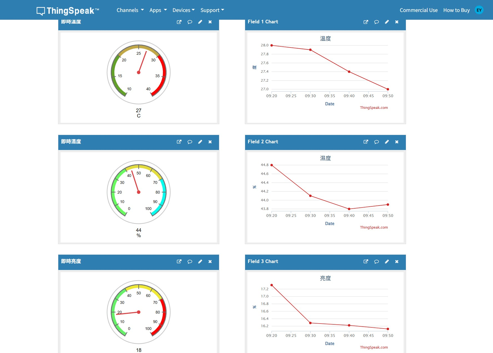
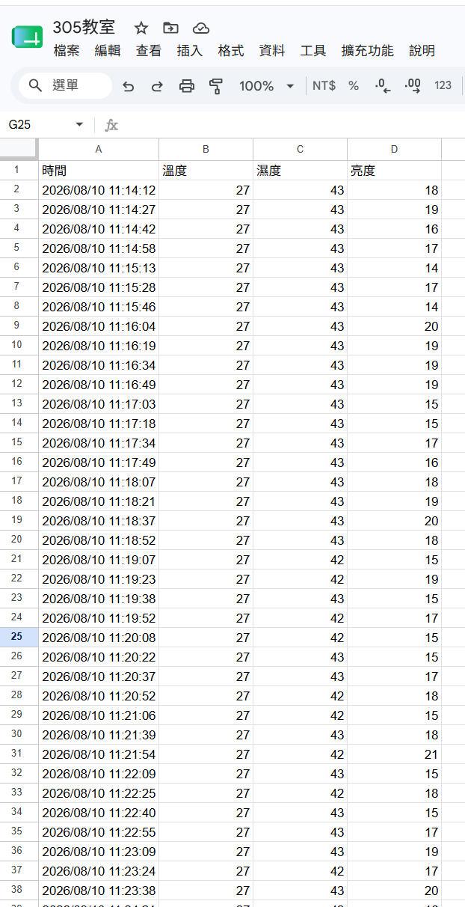
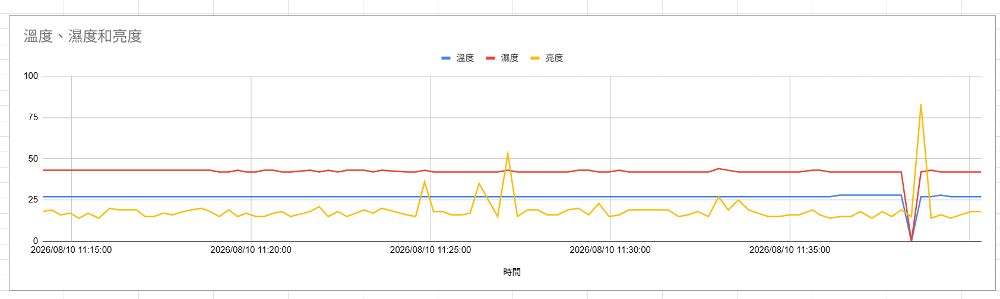
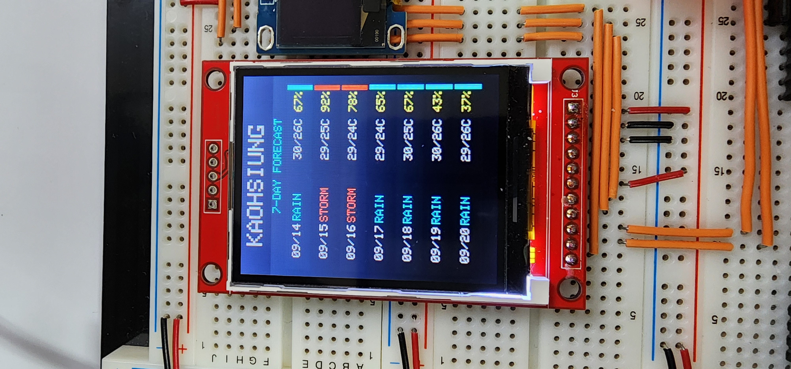
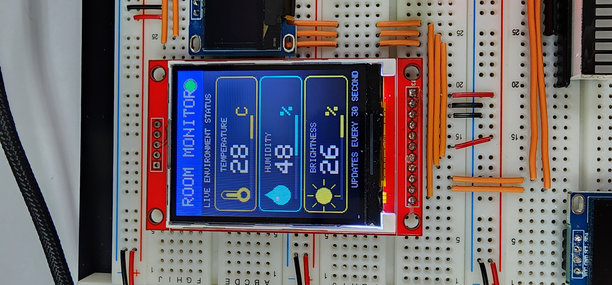
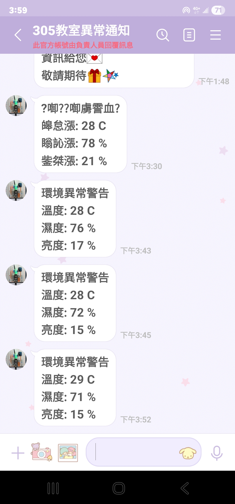
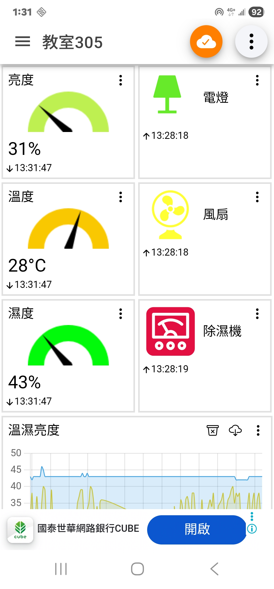
DOCUMENTATION
報告保留實作過程與成果紀錄；GitHub repository 則提供所有範例程式與函式庫整理。
前往 GitHub repository ↗